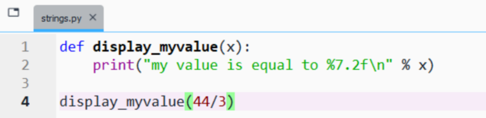
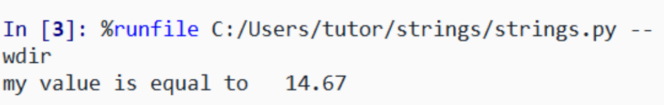
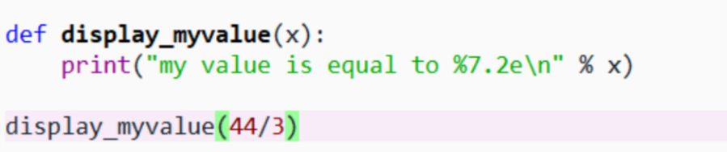
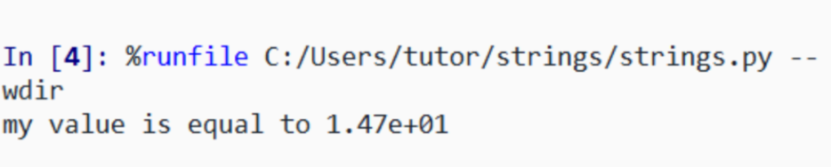
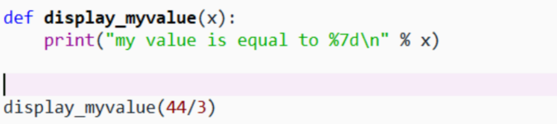
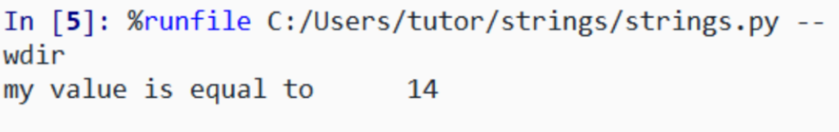
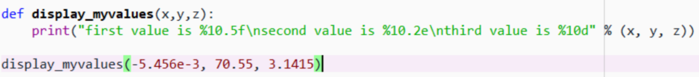
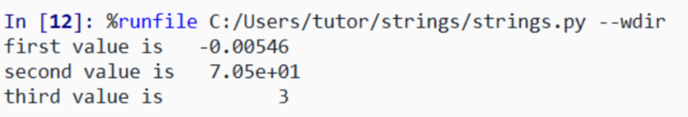
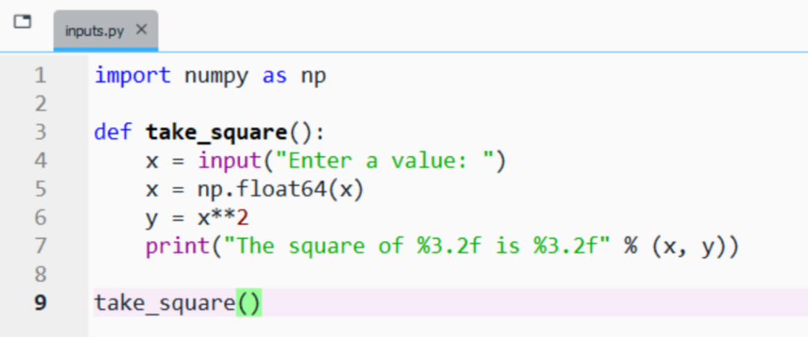
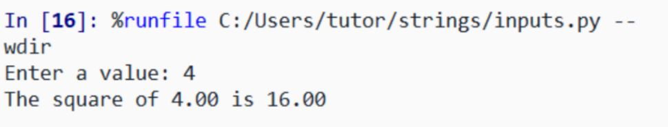

Let's break it down:
Let's edit display_myvalue function:


Can you notice the difference from the previous definition?
Let's again edit display_myvalue function:


Can you notice the difference from the previous definitions?
As a summary the formats are,
| notation | format |
|---|---|
| floating-point | f |
| scientific | e |
| integer | d |
Multiple values can be printed:


input function is utilizedinput

We've seen defining functions in assignments, and their use.
Let's summarize and make some remarks.
There can be four types of function definitions:
def myfunction(parameters):
function-block
return variables
def myfunction(parameters):
function-block
def myfunction():
function-block
return variables
def myfunction():
function-block